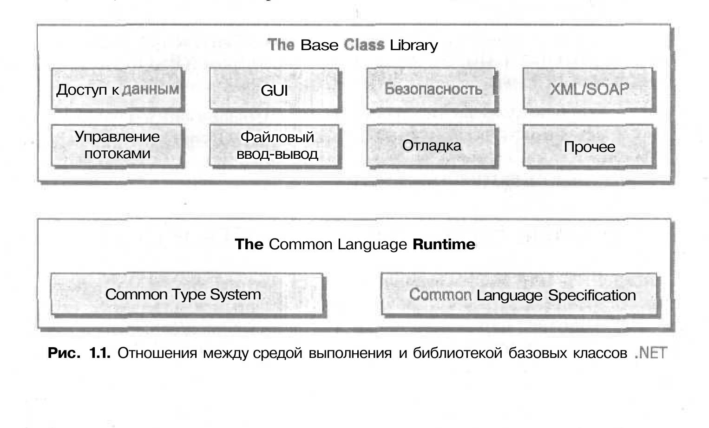

БЛОГ ВЛАДИМИРА КОЛЕСНИЧЕНКО
Охранно-пожарная автоматика и охранное видеонаблюдение
Радио-технологические штучки и мистер Никола Тесла
Цифровая обработка сигналов DSP, и радиосистемы

Программирование
Программное обечпечение - ПО - программа или множество программ, используемых для управления компьютером
Предыстория. Зарождение программирования
Первую программу написала Ада Лавлейс для разностной машины Чарльза Беббиджа, однако эта машинатак и не была достроена, разработки леди Лавлейс остались чисто теоретическими.
Несмотря на это, Ада Лавлейс считается первым программистом в истории.
Первая теория, касающаяся программного обеспечения, была предложена английским математиком Аланом Тьюрингом в 1936 году В эссе (On computable numbers with application to the Einsteidungsproblem)
Главная идея заключалась в математическом доказательстве факта, что любое наперед заданное состояние системы можеть быть всегда достигнуто последовательным выполнением конечного набора элементарных команд (программы) из фиксированного набора команд.
Первые электронно вычеслительные машины 1940-1959 х годов перепрограммировались путем переключения тумблеров и переподключения кабелей, что требовало глубокого понимания их внутреннего устройства. К таким машинам, в частности, относился ENIAC (который, впрочем, впоследствии модифицирован
чтобы он мог, по крайней мере частично, программироватся с помощью перфокарт.
Важным шагом в сторону современныхз компьютеров был переход к архитектуре Джона фон Неймана, впервые воплощенной в Великобритании, в разработанном под руководством Джона Уомерзли и при участии Алана Тьюринга комьютере,
известном как Марк 1. Первая программа , хранимая в памяти компьютера. была запущена на нём 21 сиюня 1941 года. Для облегчения программирования этой машины Тьюринг придумал систему сокращенного кодирования, в которой для
представления двоичного машинного кода использовались последовательность телетайпных символов, выводимых на перфоленту
Один из сторудников Тьюринга, Джон Мочли, став позднее (вместе с Джоном Преспером Эккертом) руководителем и основателем компании Eckert-Mauchly Computer Corporation, разработавшей такие ЭВМ, как BINAC и UNIVAC, поручил своим сотрудникам создать транслятор алгебраических формул. Хотя эта амбициозная цель в 1940-х годах и не была достигнута, под руководством Мочли был разработан так называемый Краткий код, в котором операции и переменные кодировались двухсимвольными сочетаниями. Краткий код был реализован с помощью интерпретатора. Грейс Хоппер, работая с начала 1950-х годов надо набором математических подпрограмм для UNIVAC, изобрела программу-компоновщик А-0, которая по заданному идентификатору осуществляла выбору нужной подпрограммы из библеотеи, храняющеся на магнитной ленте, и записывала ее в отведенной место оперативной памяти.
В 1950 годы появились первые высокоуровневые языке программировения, Джон Бекус разработал FORTRAN , а ГроейС Хоппер - COBOL. Подобное разработки значительно упростили написание прикладного прогрммного обеспечения, которое писала тогда каждая фирма, приобретающая вычислительную машину.
В начале 1950х годов понятие программного обеспечения еще не сложилось. Так не говорилось о нём ничего в вышедшей в январе 1952 в журнале Fortrune статьи Office Robots, описывающем компьютеры UNIVAC, Хотя в статье уже расказывается о компьютере как об иниверсальном устройстве, процесс программирования в этой статье был анахронически описан как "переключение тумблеров". Однако к середине 50х годова уже вполне сложилась разработка программного обеспечения на заказ, хотя сам термин " программное обеспечение" еще не использовался, тогда говоили просто о "программировании на заказ" или "программистком обслуживании". Первой программной фирмой стала компания System Develpment Corporation, созданная в 1956 году на базе принадлежайщей правительству США фирме Rand Corporation. На этом этапе заказчиками программного обеспечения (уникального и не теражируемого( были крупные корпорации и гос.структуры, и стоимость в один миллион долларов за программу не была чем то необычным.
Ранняя история. Корпоративное ПО
Собственно сам термин "программное обеспечение вощёл в широкий обиход с начала 1960-х годов, когда стало актуальным разграничение команд, управляющих компьютер, и его физических компонентова - аппаратного обеспечения. Тогда же и началось становление индустрии програииного обеспечения, как самостоятельной отрасли. Первой компанией по разработке ПО стала основанная в 1959 году Роем Наттом и Флетчером Джоунсом - Computer Sciences Corporation с начальным капиталом в 100 долларов. Первыми клиентами CSC и появившихся вслед на нею софтверных компаний были сверхкрупные корпорации и государственные организации, вроде NASA, и фирма продолжала работать на рынке заказного ПО, как и другие первые программистские частные стартапы, такие как Computer Usage Company (CUC).
Первыми самостоятельно выпущенными программными продуктами, не поставляемыми в комплекте с компьютерным оборудованием, были выпущенный фирмой Applied Data Research в 1965 году генератор компьютерной документации AUTOFLOW, автоматически рисующий блок-схемы, и транслятор языка программирования MARK-IV, разработанный в 1960-1967 годах в Informatics. Становление рынка корпоративного программного обеспечения тесно связано с появленикм семейства компьютеров IBM System/360. Достаточно массовые, относительно недорогие вычислительные машины, совместимые друг с друг на уровне программного кода, открыли дорогу тиражираемому программному обеспечению.
Постепенно круг заказчиков программного обеспечения расширялся, что стимулировало разработку новых видов программного обеспечения. Так появилось первые фирмы. специализирющеся на разработке систем автоматизированного проектирования.
В ноябре 1966 года журнал Bisiness Week впервые обратился к теме индустрии программного обеспечения. Статья называлась Softwre Gap - A Growing Crisis for Computers и рассказывала как о перспектвности этого бизнеса, так и о кризисе, связанном с нехваткой программистов. Типичные программные продукты того времени служили для автоматизации общих для бизнеса задач, таких, как начисление заработной платы или автоматизации бизнес-процессов таких предприятий среднего бизнесу, как производственное предприятие или коммерческий банк. Стоимось такого ПО, как правило, была между пятью и ста тысячами долларов.
Персональные компьютеры и программное обеспечение для массового потребителя
Появление в 1970 годах первых персональных компьютеров (таких, как Албтаир 8800) моздало предпосылки и для зарождения массового рынка программного обеспечения. Изначально программы для персональных компьютеров распространились в коробочной форме через торговые центры или по почте и имели цену 100-500 долларов США торговые центры или по почте и имели цену 100-500 долларов США
Знаковыми для зарождающего массового рынка программного обеспечения стали такие продукты, как электронная таблица VisCalc, идея котой пришла Дэниелу Бриклину когда тот, будучи выпускником MIT и инженером-программистом в DEC, посещал курсы в Гарвардской школе бизнеса и хотел облегчить себе утомительные финансовые расчёты, и текстовый процессор WordStar, разработку котрого начал Сеймур Рубинштейн тщательно изучив потребности рына. О vivsiCalc впервые заговорили, как о killer application, то есть компьютерном приложении, которон самим фактом своего существования доказывает нужность ( и зачастую необходимость покупки) платформы, для котрой реализрвана такая програрамма.
Массовое тиражирование позволило снизить к середине 1990 годов стоимость прогрммного обеспечения для персональных компьютеров до ста - пятисот долларов, при этом бизнес производителей ПО приобрел определенное сходство с бизнесом звукозаписывающих компаний.
Классификация ПО
Подходы к классификайии ПО достаточно подробно формализованы в международном стандарте ISO/IFC 12182. В частности первая версия стандарта
предусматривала 16 критериев классифиепции программных средств.
- По режиму эксплуатации
- По масштабу
- По стабильности
- По функции
- По требованию защиты
- По требованию надежности
- По требоваемым рабочим характеристикам
- По исходному языку
- По прикладной области
- По вычислительной системе и среде
- По классу пользователя
- По требованию к вычислительным ресурсам
- По критичности
- По готовности
- По предсталению данных
- По использованию программных данных
Примерами классов функции ППС являются:
- Обработка деловых сообщений
- Компиляция
- Научные вычесления
- Обработка текстов
- Медецмнские системы
- Системы управления
Примерами классов масштаба ПС являются:
- Малый
- Средний
- Большой
Примерами классов критичности являются:
Примерами классов пользователя являются
- Начинающий
- Средний
- Специалист (эксперт
- Обычный
- Случайный
- Другая система программного обеcпечения
- Технические средства
Примерами классов стабильности являются:
По сектору индустрии программное обеспечение делится на категории
По степени переносимости программы делят на
- Платформозависимые
- Кроссплдатформенные
По способу распространения и использованич програмы делят на
- Несвободное (закрытые
- Открытые
- Свободные
По назначению программы делят на:
- Системные
- Прикладные
- с установкой
- без установки
По видам программа делят на:
- Компонент - программа, рассматриваемая как единое целое, выполняющая законченую функцию и применеямая самостоятельно или в составе комплекса
- Комплекс - программа, состоящая из двух или более компонентов и (или) комплексов, взаимосвязанные функции, и применяемая самостоятельно или в составе комплекса
- Полные возможности взаимодействия с существующим кодом. Вряд ли кто нибудь будет спорить, то это вешь оень хорошая. Когда мы увидим в главе 12 существующие двоичные компоненты COM отлично работают вместе с двоичными файлами .NET
- Общая среда выполнения для любых приложений .NET, вне зависимости от того, на каких языках онни были созданы. Один из важных момеетов при этом - то, что для всех языков используется один и тот же набор встроен- ных типов данных
- Билеотека базовых классов, которая обечпечивает сокрытие всех сложностей, связанных с непосредственными использованием вызовов API, и предлагает целостную обьектную модель для всех языков программирования, поддерживающих .NET
- Про пугающую сложность COM можно забыть. ClassFactory, IUnknown, код IDL и проклятые VARIANT - совместимых данных (BSTP, SAFEARY и остальные) больше не встретятся вам в коде программ .NET
- Действительное упрощение процесса развертывания приложения. В .NET нет необходимости регестрировать двойные типы в системном реестре. Бо- лее того, .NET позволяют разным версиям одного и того же модуля DLL мирно сосуществовать на одном компьютере.
- Указатели больше не нужны! В программах на C#, как правило, нет неоюхо- димости в работе с ними (однако если вам это потребуется, пожалуйства, - возможности для работы с указателями в вашем распоряжении).
- Управление памятью производиться автоматически.
- В С# предусмотрены встроенные синтаксические конструкции для работы с перечислениями, структурами и свойствами классов.
- В C# осталась возможность перегружать операторы, унаследованные от С++. При этом значительная часть возникваших приэ том сложностей ликвидированаю
- Предусмотрена полная поддержка использования программных интерфей- сов. Однако в отличие от классического COM применение интьерфейсов - это не единственный способб работы с типами, используя различные двоич- ные модули. .NET позволяет передавать обьекты (как ссылки или как зна- чения - через границы программных модулей.
- Также предусморена полная поддержка аспектно-ориентированных про- граммных технологий (таких как атрибуты). Это позволяет присваивать типам характеристики (что во многом напоминает COM IDL) для описа- ния в будущем данной сущности
Прогрпммное обеспечение делится на категории:
Системное программное обеспечение
Комплекс программ, которые обеспечивают управление компонентами компьютерной системы, такими как процессор, оперативная память, устройство ввода-вывода, сетевое оборудование, выступая как "межслойный интерфейс", с одной стороны которого аппаратура, а сдругой - приложения пользователя. В отличие от прикладного программного обеспечения, системное не решает конкретные практические задачи, а лишь обеспечивает работу других программ, предоставляя им сервисные функции, абстрагирующие детали аппаратной и микропрограммной реализации вычислительной системы, управляет аппаратными ресурсами вычислительной системы. Отнесение того или иного программного обеспечения к системному уровню, и зависит от соглашений, используемых в конкретном контексте. Как правило, к системному программному обеспечению относятся операционные системы, утилиты, системы управления базами данных, широкий класс связующего программного обеспечения.
Прикладное программное обеспечение - прогамма, предназначенная для выполнения определенных задач и расчитанная на непосредственное взаимодействие с пользователем.
Лицензия
Пользователь получает программное обеспечение вместе с лицензией, которая предоставляет ему право использовать программный продукт при условии выполнения положений о лицензировании. Как правило, эти условия ограничивают возможности пользователя передавать программный продукт другим пользователям, изменять код.
Часть программного обеспечения поставляется со свободной лицензией. Такие лицензии позволяют распространять программное обеспечение, а также модифицировать его.
Часть программного обеспечения распространяется как бесплатное. Существует также условно-бесплатное программное обеспечение. В этом случае обычно пользователь бесплатно получает демонстрационную версию программного продукта с несколько ограниченными возможностями на определенный испытательный период, а после его окончания обязан или приобрести продукт, или деинсталлировать его.
Системное программное обеспечение
Системные программное обеспечение - комплекс программ, которые обеспечивают управление компонентами компьютерной системы, такими как процессор, оперативная память, устройство ввода-вывода, сетевое оборудование, выступая как "межслойный интерфейс", с одной стороны которого аппаратура, а с другой приложения пользователя. В отличие от прикладного программного обеспечения, системное не решает конкретные практические задачи ,а лишь обеспечивает работу других программ, представляя им сервисные функции, абстрагирующие детали аппаратной и микропрограммной реализации вычеслительной системы, управляет аппаратными ресурсами вычеслительной системы.
NET FRAMEWORK
Решение .NET
На этом будем считать обращение к новейщей истории программирования законченым. Главный выход, с которым вряд ли кто нибудь будет спорить таков: тяжела жизнь Windows-программиста. На этом фоне возможности,
предлагаемые платформой NET, позволяют радикально облегчить вашу жизнь. Один из главных принципов .NET звучит так: "изменяйте что хотите, откуда вам угодно". NET - это совершенно новая модель для создания приложений под
Windows ( а в будущем, видимо, и под другими операционными системами). Вот краткое перечисление основных возможностей .NET:
Строительные блоки .NET (CLR, CTS CLS)
Технологии CLR, CTS и CLS очень важны для понимания смысла платформы .NET. С точки зрения программиста .NET вполне можно рассматривать просто как новую среду выполнения и новую библиотеку базовых классов. Среда выполне- ния .NET как раз и обеспечивается с помошью Common Language Runtime (CLR стандартная среда выполнения для языков). Главная роль CLR заключается в том, чтобы обнаруживать и загружать типы .NET и производить управление ими в со- ответствии с вашими командами. CLR берет на себя всю низкоуровневую рабо- ту - например, автоматическое управление памятью, межьязыковым взаимодей- ствием, развертывание (с отслеживанием версий) различных двоичных библеотек.
Еще один строительный блок платформы .NET - это Common Type System (CTS, стандартная система типов). CTS полностью описывает все типы данных, поддерживаемый средой выполнения, определяет, как одни типы данных могут взаимодействовать с другими и как они будут представлены в формате метадан- ных .NET (подробное о метаданных будет расказано ниже в этой главе).
Важно понимать, что не во всех языках программирования .NET обязательно должны поддерживатся все типы данных, которые определны в CTS. Common Language Specification (CLS) - это набор правил, определяющих подмножество общих типов данных, в отношении которых гарантируется, что они безопасны при использовании во всех языках .NET. Если вы создаете типы .NET с использовани- ем только тех возможностей, которые совместимы с CLS, тем самым вы сделаете их пригодными для любых языков .NET.
Бибилеотека базовых классов .NET
Помимо спецификации CLR и CTS/CLS платформа .NET представляет в ваше распоряжение также библиотеку базовых классов, доступную из любого языка программирования .NET. Библиотека базовых классов не только прячет обычные низкоуровненые операции, такие как файловый ввод-вывод, обработка графики и взаимодействие с оборудованием компьютера, но и обеспечивает поддержку большого количества служб, используемых в современных приложениях.
в Качестве примера можно привести встроенные типы для обращения к базам данных, работы с XML, обеспечения безопасности при работе приложения, создания приложений для работы в WEb ( конечно, обеспечивется и поддержка обыч- ных и консольных приложений). С концептуальноц точки зрения отношения между уровнем среды выполнения и библеотек базовых классов .NET выглядит так , как показано на рис 1.1
Преимущества
Специально для платформы .NET Microsoft был разработан новый язык программирования C#. C# - это язык программирования, синтаксис которого очень похож на синтаксис Java (но не идентичен ему). Например в С# ( как в Java) определение класса состоит из одного файла (*cs), в отличие от C++ , где определение класса разбито на заголовок (*h) и реализацию (*cpp). Однако называть C# клоном Java было бы неверно. Как C# так и Java основаны на синтаксических конструкциях C++. Если Java во многих отношенияъ можно назватьочишенноц версией С++, то C# можно было охарактеризовать как очишенную версию Java.
Синтаксические конструкции C# унаследованы не только от С++, но и от Visual Basic. Например, в C#, как и в Visual Basic, используются свойства клас- сов. Как С++, С# позволяет производить перегрузку операторов для созданных вами типов (Java не поддерживает не ту, ни другую возможность). C# - это фак- тически гибрид разных языков. При этом C# синтаксически не менее (если не более) чист, чем Java, так же прост, как Visual Basic, и обладет практической той же мощью и гибкостью, что и C#.
Возможно, самое важное, что необходимо сказать про язык С# - это то что он генерирует код, предназначенный для выполнения только в среде выполнения .NET. Например, вы не сможете использовать C# для создания классического COM- сервера. Согласно терминологии Microsoft код, предназначенный для работы в среде выполнения NET - это управляемый код (managed code). Двоичный файл, который содержит управляемый файл, называется сборкой (assembly). Под робнее об этом будет сказано ниже.
Языки программирования .NET
Во время анонса платформы .NET на конференции 200 Professioanl Delevopers Conference (PDC) докладчики называли фирмы, работающие над создания .NET- версией своих компиляторов. На момент написанния этой книги компиляторы для создания. NET-версий приложений разрабатывались более чем для 30 различных языков. Помимо четырёх языков, поставляемых с Visual Studio NET (C#, Visual Basic.NET, MANAGED C++ и JSSCRIPT.NET), ожидаются .NET-версии Smalltalk, COBOL, Pascal, Python, Perl и множества остальных известных языков програм- мирования.

Может показатся смешным, но двоичные файлы .NET для которых использу- ются стандартные расширения DLL и EXE, по своему внутреннему содержанию не имеют абсолютно ничего общего с обычными испольняемыми файлами. Например, файлы DLL не предоставляют свои методы в распоряжение приложений на компью- тере. в отличие от компонентов COM двоичные файлы .NET не описываются с помошью кода IDL и регестрируются в системном реестре. Однако, пожалуй, самое важное отличие заключается в том, что двоичные файлы .NET не содержат зависящих от платформы команд. Содержимое двоичных файлов .NET - это плат- форменно-независимый "промежуточный язык", который официально называет- ся Microsoft Intermediate Language (MSIL, промежуточный язык Microsift), или просто IL.
Обзор двоичных файлов NET (сборки)
Когда с помошью компилятора для платформы NET создается модуль DLL или EXE, содержимое этого модуля - это так называемая сборка (assembly) на языке IL. Однако чтобы понять особенности среды выполнения .NET нвам потребуется охарктери- зовать хотя бы некоторые базовые свойства этого нового формата исполняемых файлов.
Как уже говорилось, сборка содержит код на "промежуточном языке - IL. Назначение IL концептуально аналогично байт- коду Java - он компилируется в платформенно-спецефичные инструкции, только когда это абсолютно необхо- димо. Абсолютная необходимость возникает тогда, когда к блоку инструкций IL (например, реализация метода) обращается для использования среда выполнения NET.
Помимо инструкций IL, двоичные модули .NET содержат также метаданные, которые подробно описывают все типы, использованные в модуле. Например, если у вас внутри сборки есть класс Foo, то в метаданных этой сборки будет содержаться информация о базовом классе для Foo, какие интерфейсы предусмотрены для Fco (если они вобще предусмотрены), а также полное описание всех методов, свойств и событий этого класса.
Во многих отношениях метаданные .NET являются значительным усовершен- ствованием по сравнению с классической информацией о типах в COM. Класси- ческие двоичные файлы COM обычно описываются с помошью асоциированной библиотеки типов (которвая очень похожа на двоичную версию кода IDL). Про- блема с информацией о типах в COM заключается в том, что никто не сможет гарантировать вам, что эта информация окажется полной. Код IDL не может га- рантировать вам, что эта информация окажется полной. Код IDL не может создать полнный каталог внешних серверов, которые могут быть необходимы для нормаль- ной работы содержащихся в модуле COM клакссов. Существование метаданных .NET, напротив, обеспечивается тем, что метаданные автоматически генерируют- ся компилятором, создающим приложение .NET.
Метаданные описывают не только типы, используемые в сборке, но и саму сбор- ку. Эта часть метаданных называется манифестом (manifest). В манифесте содер- жится информация о поддерживаемом естественном языке (английском, русском и т.д), а также список всех внешник сборок, которые потребуются для нормаль- ного выполнения. Нам предстоит рассмотреть в этой главе различные средства, которые можно использовать для анализа кода IL внутри сборки, метаданных для типов и манифеста.
Сборки из одного и несколько файлов
В подавлющим большинстве случаев двоичных файл NET и сборка - это одно и тоже и между ними сушествует отношение один к одному . Если мы будем го-ворить о создании .NET DLL , понятия "двоичный файл" и сборка мы будем использовать как синонимы. Однако (подробнее об этом - в главе 6) такой под- ход верен не всегда. Сборка может состоять как из одного, так и из нескольких двоичных файлов. В сборке из одного файла (single fleassembly) этот единственн- ый файл содержит и манифест, и метаданные, и инструкции IL.
В сборке из нескольких двоичных файлов (multiple assembly) каждый двоичн- ный файл называется модулем (модулем). При создании таких многофайловых сбо- рок один из двоичных файлов должен содержать манифест сборки (в нем могут также находится и другие данные, в том числе инструкции IL
Зачем может потребоватся создание многофайловой сборки? Единственная причина для этого - большая гибкость при развертывании приложения. Напри- мер, если пользователь обращается к удаленной сборке, которая должна быть за- гружена на его локальный компьютер, среда выполнения загрузит лишь те модули сборки, которые действительно необходимы. Такое решение позволит избежать ненужного сетевого трафика и увеличить скорость работы программы.
Роль Microsoft Intermediate language
Теперь, когда вы уже имеете представление о сборках .NET. мы можем рассмот- реть Microsoft Intermediate Language (IL) - промежуточный язык Microsoft, бо- лее подробно. Код IL не зависят от платформы, на котрой будет производится выполнение. При этом компилятор для платформы NET сгенерирует код IL вне зависимости от того, какой язык программирования (С#, Visual Basic NET, Eifel и т.п) вы использовали для создания программы. Пожалуй, есть смысл продемонстрировать это более наглядно. В еачестве примера мы создадим не самый слож- ный калькулятор. Единственное, что он у нас будет иметь делать - производить сложение 10 и 84. Ниже проведен код этого калькулятора на C#. Пока можно не задуматся об особеностях синтаксиса в этом примере, но отметьте для себя код, относящиеся к методу Add0.